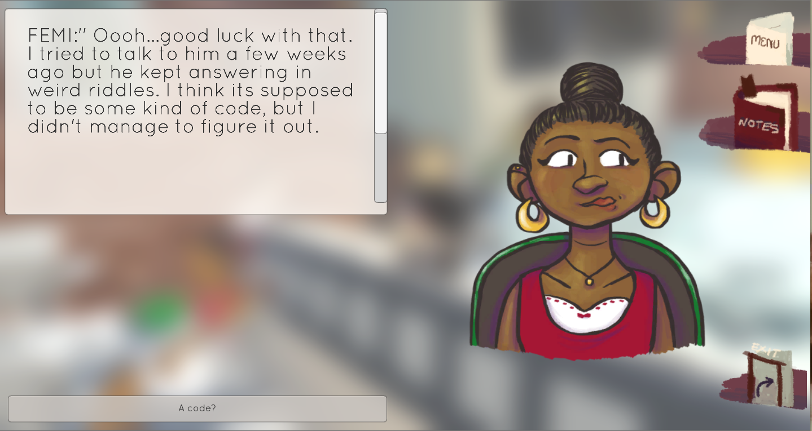
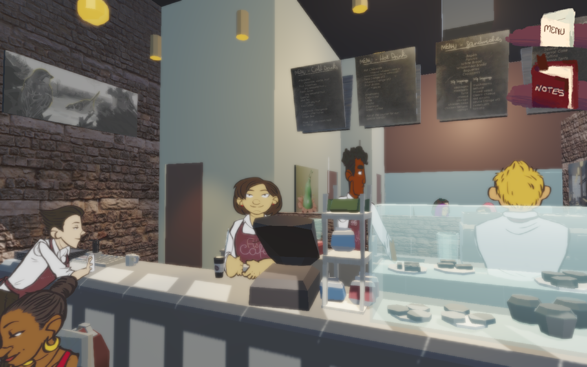
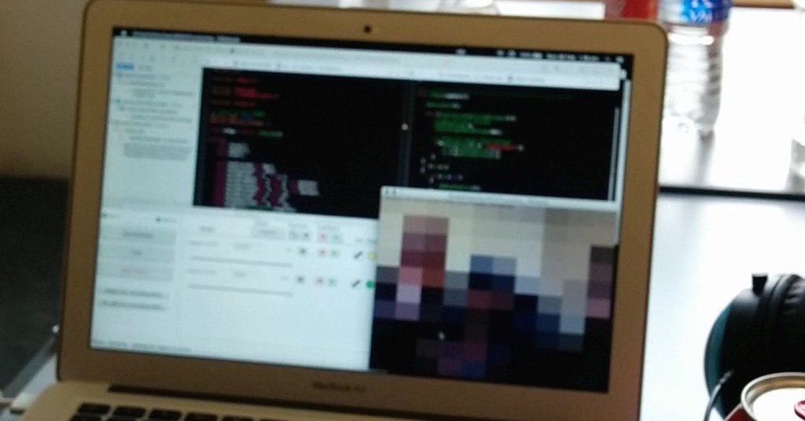

I am a student studying Games Programing at Goldsmiths. I put a focus on my work to be creative and original.
Even though I am a student I do lot outside of class, I am societies officer at Goldsmiths Student Union and the diversity officer of Hacksmiths (our unis hacking/tech society).
I am a friendly person and try to meet new people and generaly get involved and help out with as many things as I physically can.
Think im a cool guy? Want to speak to me? Contact me on one of the social media links at the bottom of the site
Monster Rush
Monster Rush is the game we made as part of our Games Project module in 2nd year. Over 6 months we designed and built a game in Unity 5 in a team of 4. It is a isometric-voxel-twin stick-shooter-survival game.
Scribble Defence was our first year Creative Project module. Made in the 2nd term by a team of 5 people in Unity 4. It is a simple tower defence game where you place towers stragitcly on the map to stop the enemies. The game was featured by our university at there undergaduate compting show 2015. Download for android here Play online here
Sand Runner was the first game we made during university. It is a simple endless runner where you jump to collect coing and avoid enemies. We made it in Processing. We were in a team of 4 people and I acted as the lead programmer. You can download and play it on your android device here
Fi's Cafe is a project I helped a friend create. For thier final year project my friend wanted to create a game to showcase their art. I acted as technical lead and helped build their game with the help of two others, following their design doc and using their art and models.

The game is combination of point and click and visual novel, set in a 3D cafe, you can explore, interact with objects and talk to people.

You can play and read more about this project here.
I go to a lot of hackathons. Here are some of the things I have made at hackathons, if you want to see more of my work, a more up to date list or more about them you can check out my devpost or the blog posts I write about some of them.
RGB Panther

RGB Panther was project I made at my first MLH hackathon. It is a game where you have to collect fruit to match a specific colour. To move up and down you have to wave either a duck or a coke can infront of the webcam. See my full write up about the project, including how I got the idea and a video of me presenting here.
Rotten is the project I made during StudentHack IV, a hackathon in Manchester. I hooked up some fruit to my laptop using a MakeyMakey and made a simple game in C++/OpenFrameWorks where you had to try and tap your fruit faster than the other people. I also made a companion app in processing that sent OSC messages to the game, so more than just 4 people could play. I did a blog post of the weekend that you can read here.
As well as going to cool events I also help organise and volenteer at them.
Hackcess
Hackcess is a hackathon focused on helping disabled people live more independent lives, improving accessibility through technology. I was a volenteer at this event, I greeted people on the door, handing out lanyards, helping them with any issues, helped group people together into teams as well as help clean up the venue after the event ended.
Global Game Jam 2016
I helped orgainse a site for Global Game Jam 2016 at Goldsmiths University of London.
The event was 48 hours long and we had around 70 particpents and by the end of the weekend 15 games were made and uploaded.
Working together with lecturers from the computing department and 2 other students, I got posters made and put them up, got socities from the student union to bring video and table top games, and was co-incharge during the night.
Anvil Hack 2016
AnvilHack II is Goldsmiths university's' anual student lead hackathon. It is a 24 hour event over a weekend where people make something creative with technology.
As a main organiser I am helped with visual identity, advertising and merchandise, I assisted with setup of the space and helped run the event on the day.
Over 100 people attended and there were 21 submissions which can be seen here